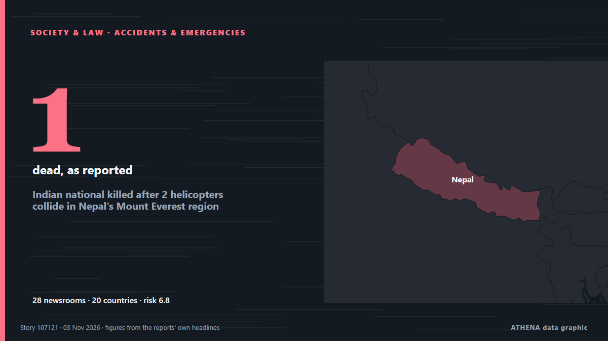

جنوب آسيا
جنوب آسيا: أحدث الأحداث دولة بدولة، مع الخطر والمصادر والدول من ATHENA.

المجتمع والقانونIndian national killed after 2 helicopters collide in Nepal's Mount Everest region
An Indian national was killed and a New Zealander injured after two helicopters collided as they prepared to land in Nepal’s Mount Everest region on Tuesday, authorities said. من Dawn
Indian Navy Rescues 20 Crew Members From Hijacked Iranian Vessel off Somalia
Airborne commandos recapture fishing boat seized by pirates as attacks off the Somali coast rise to their highest level since 2013. من Kurdistan24 (English)
Top officials from Mecca pact countries to meet Iranian officials in Tehran on Monday, two sources say
Pakistan ratifies Mecca pact as Saudi Arabia faces attacks and Israel holds military drills Submitted by MEE staff on Sat, 10/24/2026 - 10:25 Saudi authorities have lifted recent security alerts… من Middle East Eye
Photos: Aftermath of deadly Cyclone Arnab in southern India
Chandrababu Naidu instructed district administrations to establish control rooms, issue regular public alerts and coordinate emergency response measures. من NDTV
Tiger Shroff Firing Case Updates: 3 Suspects Undergo Medical Examination In Kota, Transit Remand Granted
Tiger Shroff Firing Case Updates: Tiger Shroff sustained injuries on his shoulder, chest and his right arm. من NDTV
Indian authorities tighten security ahead of big opposition march in Delhi
Protesters are set to demand the resignation of India's election chief over a controversial revision of voter lists. من CNA (Channel NewsAsia)
Heavy rainfall, uprooted trees, power outages: Cyclone Murasu crosses Andhra coast
The system is expected to bring wind speeds of 100-110 kmph, Indian Meteorological Department (IMD) director General Mrutyunjay Mohapatra said. من NDTV